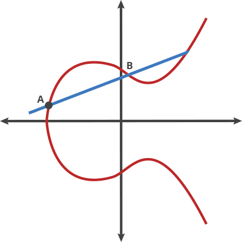

Encryption Concepts
By: Christian Koch
October 08, 2015
RSA Asymetric (Public-Private Key Cryptography)
RSA stands for Ron Rivest, Adi Shamir and Leonard Adleman, who first publicly described it in 1978.1
1ArsTechnica http://goo.gl/51AMdWPublically: 3 mod 17
Meanwhile Eve (the adversary) is monitoring their exchange.
2Using Diffe-Hellman key sharing operation
3These are assumed to be very large integers
315 mod 17 = 6
And sends the result (6) to Bob.Eve knows: 3 mod 17, 6
313 mod 17 = 12
And sends the result (12) to Alice.Eve knows: 3 mod 17, 6, 12
1215 mod 17 = 10
When Bob does the same, he gets the same result:613 mod 17 = 10
Eve knows: 3 mod 17, 6, 12
12 = 313 mod 17
1215 mod 17 = 613 mod 17
Substituting:
(313 mod 17)15 mod 17 = 613 mod 17
31315 mod 17 = 613 mod 17
Likewise:
6 = 315 mod 17
31315 mod 17 = (315 mod 17)13 mod 17
31315 mod 17 = 31513 mod 17
Alice & Bob now both know the shared secret key (10).
Eve has no way to discover the key without calculating all the possible keys.4
4This solution space is very very large.Elliptic Curve Cryptography (ECC)
An alternative to RSA-based prime number generation.
ECC Curve
2 = x3 + ax + b
Technically an elliptic curve is the set points satisfying an equation in two variables with degree two in one of the variables and three in the other.
An elliptic curve cryptosystem can be defined by picking a prime number as a maximum, a curve equation, and a public point on the curve. A private key is a number priv, and a public key is the public point dotted with itself priv times.
One interesting feature of ECC is that it is completely deterministic and the keys can be regerated by knowing only the numerical priv value.
Elliptic Curve Cryptography

Main Benefits:
- NP-Hard problem
- Small key sizes, great for mobile devices
- Computationally lightwieght and easy to calculate keys
- Deterministitc
- Based on the Discrete Logarithm Problem (DLP)-- or the ease of calculating the next value of a curve over a finite field.5
- Extremely difficult (even moreso than RSA) to calculate backwards from public to private key.
5CIPP Guide https://goo.gl/rTmFQd
Main Concerns:
- A 112-bit ECC key has been brute-force compromised. This was done by calculating all 260 possible key combinations.6
- Some implementations of ECC are promoted by NIST (National Institute of Standards and Technology) and are affiliated with the NSA. There is concern that the Dual Elliptic Curve Deterministic Random Bit Generator (Dual_EC_DRBG) may be compromised with a backdoor, or it may not be truly random.
- Similar to RSA, at any point, an algorithm may be developed to shortcut and minimize the possible solution space.
6CIPP Guide https://goo.gl/rTmFQd
How can this work for NCSA?
SSH everywhere to disable passwords for server login.
An asymmetric key based login system to centrally manage user-access to servers.
Other interesting concepts:
BCrypt (blowfish cipher) Key Derivation Function
SCrypt Password-Based Key Derivation Functions (PBKDF)
Aspirational: SQRL (Secure Quick Reliable Login)7
Out-of-band user authentication (using QR codes)
The SQRL protocol makes it easy for any user to authenticate with a public key. (Without needing to have a technical background)
Based on ECC, but using a flavor of ECC not influenced by NIST or NSA (probably)8
7GRC https://goo.gl/2R7UgR
8GRC https://goo.gl/2R7UgR Uses Dr. Daniel J. Bernstein's (DJB) twisted Edward's curve digital signature algorithm (EdDSA). In published papers, DJB, explains the detailed derivation and properties of his “25519” elliptic curve.
by positioning, rotating and scaling them on an infinite canvas
the only limit is your imagination
want to know more?
use the source, Luke!
one more thing...
have you noticed it's in 3D*?
* beat that, prezi ;)